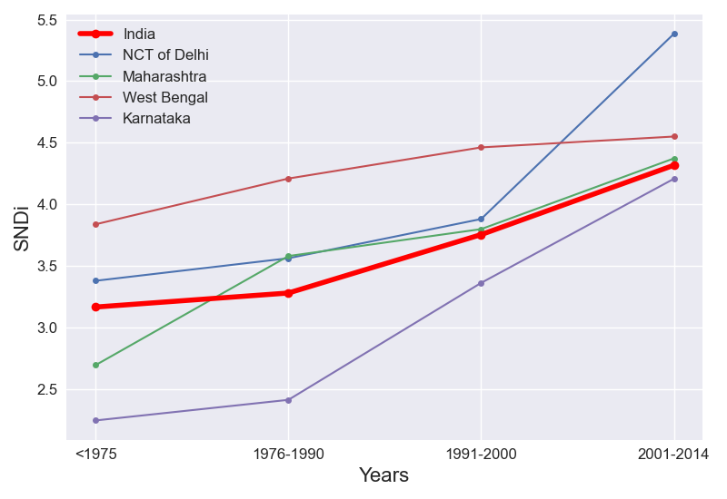

The cumulative and incremental level of street network disconnectivity in india change over time in the same way.
In India, the overall level of street network sprawl is 3.7. New street construction has been increasing in sprawl over time.
The levels of SNDi for each time period in India's 4 most populous regions are plotted too. The most populous cities in India largely follow the same regional trend.
To date, India is the 8th-most disconnected country out of the 17 countries in South-Central Asia. It has largely maintained its place in the ranks since 1975. In <1975, it ranked 10th, ranked 7th in 1976-1990 and ranked 7th in 1991-2000 and ranked 5th in 2001-2014.
In comparison to the rest of the world, India has the 73rd-most disconnected street network out of 188 countries. It has fallen in the ranks since 1975. In <1975, it ranked 71st, ranked 72nd in 1976-1990 and ranked 87th in 1991-2000 and ranked 76th in 2001-2014.